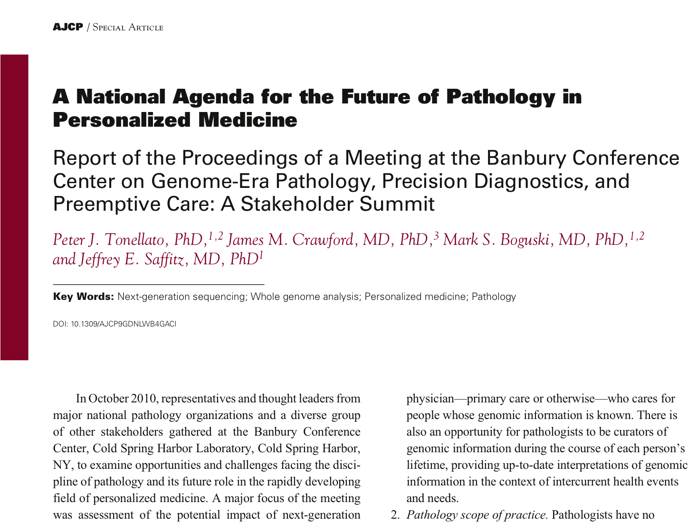

Informatics for Systems Biomedicine
Data sciences for context dependent computing
Jonas S Almeida ( jonasalmeida.info)
Data Sciences that follow the biomedical data !
" ...the broad area encompassed by data science (i.e., bioinformatics, computational biology, biomedical informatics, biostatistics, information science, quantitative biology, etc.)"*
* NIH Data Science Initiative
Created January 2011, planned for ~4-5 faculty, full strength July 2013
Division of Informatics at the Dept of Pathology
Informatics Division of the Department of Pathology at UAB +
|
Integrative Bioinformatics Lab My research is focused on the computational infrastructure and Data Science underlying integrative bioinformatics. Specifically, it seeks to articulate the computational statistics aspects of data analysis with the data representation and management of its acquisition for systems level modeling. Ongoing work is focused on applications Big Data such as The Cancer Genome Atlas (TCGA), and clinical environments, such as Pathology image analysis workflows. ... Kim YW, Koul D, Kim SH, Lucio-Eterovic AK, Freire PR, Yao J, Wang J, Almeida JS, Aldape K, Yung WK. (2013) "Identification of prognostic gene signatures of glioblastoma: a study based on TCGA data analysis." Neuro-Oncology (in press) [PMID:23502430]. ... Robbins DE, A Gruneberg, HF Deus, MM Tanik, JS Almeida (2013) A Self-Updating Roadmap of The Cancer Genome Atlas. Bioinformatics [PMID:23595662]. ... Almeida JS, A Grüneberg, W Maass, S Vinga (2012) Fractal MapReduce decomposition of sequence alignment. Algorithms for Molecular Biology 7:12 [PMID:22551205]. |
Informatics Division of the Department of Pathology at UAB +
|
Genomes as the “book of life”. My research focus is to decipher genomes literally as a book: I use computational linguistics to identify linguistic “universals” in genomes to investigate how genome organization affects evolution. Using data from sequencing initiatives, I study how the gramar of cancer genomes evolve and look for evolutionary patterns. I also participate in several collaborative research efforts, such as investigating roles of mitochondrial morphology in malignant transformation. ... Haft D.H., Selengut J.D., Richter R.A., Harkins D., Basu M.K., and Beck E. TIGRFAMS and Genome Properties in 2013 (2013) Nucleic Acids Res, 41(Database issue):D387-95. doi: 10.1093/nar/gks1234. [PMID:22551205]. ... Basu M. K., Selengut J. D., and Haft D. H. (2011) ProPhylo: partial phylogenetic profiling to guide protein family construction and assignment of biological process. BMC Bioinform, 12(1):434. [PMID:23595662]. ... Haft D. H. and Basu M. K. (2011) Biological systems discovery in silico: radical S- adenosylmethionine protein families and their target peptides for posttranslational modification. J. Bacteriol., 193(11):2745–2755. [PMID:23502430]. |
Informatics Division of the Department of Pathology at UAB +
|
Computational Molecular Biology Study of the effect of SNPs resulting in single amino acid polymorphisms. I develop machine learning-based tools to predict the effect of single point protein mutations on the protein stability (I-Mutant) to estimate the free energy change due to a given single amino acid polymorphisms (SAPs). The increasing amount of variation data made available by the 1000 Genomes and The Cancer Genome Atalas (TCGA) consortiums, allow for new disease-specific algorithms and tools for personalized medical genomics solutions. ... Capriotti E, Altman RB, Bromberg Y. (2013) Collective judgment predicts disease-associated single nucleotide variants. BMC Genomics. 14 (Suppl 3): S2. (in press). ... Kemena C, Bussotti G, Capriotti E, Marti-Renom MA, Cedric Notredame C. (2013). Using tertiary structure for the computation of highly accurate multiple RNA alignments with the SARA-Coffee package. Bioinformatics. 29:1112-1119. [PMID:23449094]. ... Capriotti E, Altman RB. (2011). A new disease-specific machine learning approach for the prediction of cancer-causing missense variants. Genomics. 98; 310-317. [PMID:21763417]. |
Informatics Division of the Department of Pathology at UAB +
|
NeuroPathology and Pathology Informatics ... Almeida JS, E Iriabho, VL Gorrepati, S Wilkinson, DE Robbins, A Grüneberg, JR Hackney (2012) ImageJS: personalized, participated, pervasive and reproducible image bioinformatics in the web browser. J Pathology Informatics 3:25 [PMID:22934238]. |
|
|
Pathology Informatics and Anatomic Pathology ... Park S, Pantanowitz L, Parwani A, Wells A, Oltvai Z. “Workflow Organization in Pathology”. Clinics in Laboratory Medicine 32(2012) 601-622.[PMID:23078662]. ... Park S, Pantanowitz L, Sharma G, Parwani A. “Anatomic Pathology Laboratory Information Systems: A Review”. Advances in Anatomic Pathology 2012 March; 19(2): 81-96.[PMID:22313836]. |


Robbins DE, A Gruneberg, HF Deus, MM Tanik, JS Almeida (2013) Bioinformatics 4(17) [PMID 23595662]
ImageJS: personalized, participated, pervasive and reproducible image bioinformatics in the web browser.
Example of active link:
div Informatics +


div Informatics +
Conclusion